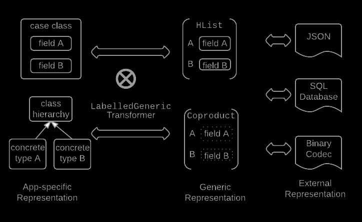
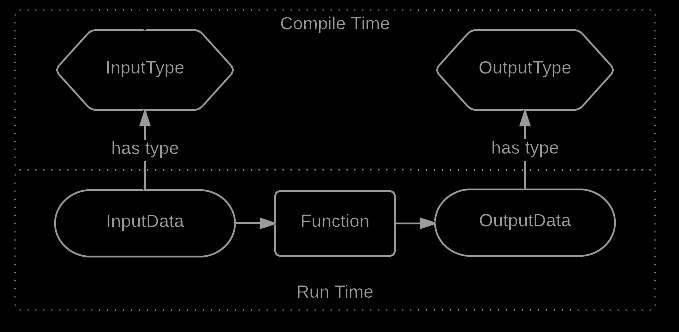
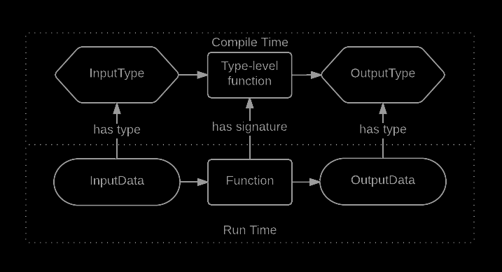
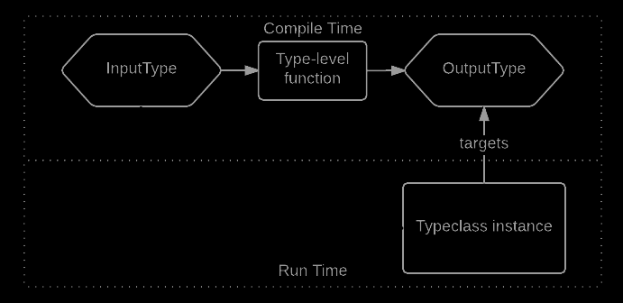

<!doctype html>
<html lang="en">

	<head>
		<meta charset="utf-8">

		<title>reveal.js – The HTML Presentation Framework</title>

		<meta name="description" content="A framework for easily creating beautiful presentations using HTML">
		<meta name="author" content="Hakim El Hattab">

		<meta name="apple-mobile-web-app-capable" content="yes">
		<meta name="apple-mobile-web-app-status-bar-style" content="black-translucent">

		<meta name="viewport" content="width=device-width, initial-scale=1.0, maximum-scale=1.0, user-scalable=no, minimal-ui">

		<link rel="stylesheet" href="css/reveal.css">
		<link rel="stylesheet" href="css/theme/black.css" id="theme">

		<!-- Code syntax highlighting -->
		<link rel="stylesheet" href="lib/css/zenburn.css">

		<!-- Printing and PDF exports -->
		<script>
			var link = document.createElement( 'link' );
			link.rel = 'stylesheet';
			link.type = 'text/css';
			link.href = window.location.search.match( /print-pdf/gi ) ? 'css/print/pdf.css' : 'css/print/paper.css';
			document.getElementsByTagName( 'head' )[0].appendChild( link );
		</script>

		<!--[if lt IE 9]>
		<script src="lib/js/html5shiv.js"></script>
		<![endif]-->
	</head>

	<body>

		<div class="reveal">

			<!-- Any section element inside of this container is displayed as a slide -->
			<div class="slides">

				<section  data-markdown>
					<script type="text/template">
						###Type-level Programming with Shapeless

						####A hands-on workshop

						####Ben Hutchison, 2016

						email brhutchison@gmail.com

						git https://github.com/benhutchison/learningshapeless

						shapeless https://github.com/milessabin/shapeless
					</script>
				</section>

				<section  data-markdown>
					<script type="text/template">
						###About me

						I work for REA Group https://rea-group.com

						Most recently Lead Developer of the Consumer Data team. We do behavioral analytics over user activity on REA sites to deliver a more relevant, personalized consumer
						experience.

						I have also coordinated the https://www.meetup.com/Melbourne-Scala-User-Group/ the past 7 years

						I maintain several Scala open-source libraries https://github.com/benhutchison.
					</script>
				</section>

				<section  data-markdown>
					<script type="text/template">
						###REA Group are Hiring

						Broad range of technology roles are currently open

						Email me at brhutchison@gmail.com to express interest or learn more

						http://careers.realestate.com.au/opportunities/

						
					</script>
				</section>

				<section  data-markdown>
					<script type="text/template">
						####Software Requirements

						- Java 8
						- sbt (Simple[sic] Build Tool)
						- - Available via `brew` or `apt-get`
						- Code editor of choice

						<br/><br/>
						####Assumed Knowledge

						- Scala familiarity
						- Understanding of *implicit parameters* - later exercises only
					</script>
				</section>

				<section  data-markdown>
					<script type="text/template">
						###Target Audience

						This workshop will suit people who want to

						- Use Shapeless library in their code

						- Learn techniques the Shapeless library uses

						- Better understand type-level programming
					</script>
				</section>

				<section  data-markdown>
					<script type="text/template">
						###Workshop Setup

						<pre><code  data-noescape>
							git clone https://github.com/benhutchison/learningshapeless.git
							git clone https://github.com/benhutchison/learningshapeless.git
							  -b solutions solutions-learningshapeless
							cd learningshapeless
							sbt   #leave sbt running between commands
							> update
							> run
						</code></pre>

					</script>
				</section>

				<section  data-markdown>
					<script type="text/template">
						###Whats Shapeless About?

						It describes itself as "Generic programming for Scala" - what does that mean?

						It actually includes a diverse range of features. Lets look at two key features:
					</script>
				</section>

				<section  data-markdown>
					<script type="text/template">
						###Tools for working with richly typed data

						Shapeless provides a range of operations that are sensitive to, and preserve, rich type
						information about the data

						<pre><code>
							val scientist = "Einstein" :: 1879 :: TheoryOfRelativity :: HNil
							val name: String = scientist(0)
							val yearBorn: Int = scientist(1)
							val wontCompile = scientist(4)
						</code></pre>
					</script>
				</section>

				<section  data-markdown>
					<script type="text/template">
						###Generic Representation of Data

						
					</script>
				</section>

				<section  data-markdown>
					<script type="text/template">
						###What is Type-level Programming?

						In ordinary strongly typed programming, functions transform data from an input- to an output-
						type. These types are relatively fixed or static for a given function.

						
					</script>
				</section>

				<section  data-markdown>
					<script type="text/template">
						###What is Type-level Programming?

						Type-level programming computes the output *type* of a function in terms of the input types.
						It happens at compile-time; when compilation is over, type-level programs have terminated.

						
					</script>
				</section>

				<section  data-markdown>
					<script type="text/template">
						###How do they affect runtime behavior?

						1. Enable stronger typing, encouraging correctness as with regular static types

						2. Via type-class instances, operators that target a particular type. *Change the type, change the behavior*
						
					</script>
				</section>

				<section  data-markdown>
					<script type="text/template">
						###Type-level Programming Characteristics

						- Flowing type information through functions to accurately preserve type information about
						values as they are transformed by a program

						- Embedding computations into the type-system, so that the result type of a function is computed
						in terms of the input types

						- Using very specific *Singleton Types* that describe a single value
					</script>
				</section>

				<section  data-markdown>
					<script type="text/template">
						###Type-level programming in Scala Collections API

						The `map` method of Scala collections uses type-level computation to vary its static return type depending on context.

						<pre><code>
							scala> val m = Map(("Ben",2))
							m: scala.collection.immutable.Map[String,Int] = Map(Ben -> 2)

							scala> m.map{case (k, v) => (k, v*2)}
							res0: scala.collection.immutable.Map[String,Int] = Map(Ben -> 4)

							scala> m.map{case (k, v) => v*2}
							res1: scala.collection.immutable.Iterable[Int] = List(4)
						</code></pre>
					</script>
				</section>

				<section  data-markdown>
					<script type="text/template">
						###Type-level Programming in Scala

						Enabled by the interaction of two Scala language features

						- The (potentially recursive) search for implicit parameters at compile time

						- The ability to infer the values of type parameters based on implicit parameters

						<pre><code>    /**  @tparam A    the element type of the collection
							*    @tparam Repr the type of the actual collection containing the elements. */
							trait TraversableLike[+A, +Repr] {

							  def map[B, That](f: A => B)(implicit bf: CanBuildFrom[Repr, B, That]): That
							}
						</code></pre>
					</script>
				</section>

				<section  data-markdown>
					<script type="text/template">
						###Doing the workshop 1

						Each source file covers a specific topic, and contains
						- A header comment describing the topic concepts
						- Example code to learn from by observation, names usually prefixed with `eg`
						- Comments describing exercises for you to attempt
						- Exercise code, prefixed with `ex`, with missing sections to complete. In the `solutions` branch,
						the missing sections are filled
					</script>
				</section>

				<section  data-markdown>
					<script type="text/template">
						###Doing the workshop 2

						*Experiment!* All files are *runnable*, and have `println` statements interspersed so you can see types and values.

						You're unlikely to complete all the material during the session

						Suggested first exercises
						- HList
						- TaggedTypes
						- Coproducts
						- Generic

						See the README file for the complete list
					</script>
				</section>

			</div>

		</div>

		<script src="lib/js/head.min.js"></script>
		<script src="js/reveal.js"></script>

		<script>

			// Full list of configuration options available at:
			// https://github.com/hakimel/reveal.js#configuration
			Reveal.initialize({
			    width: 1200,
    			height: 700,
				controls: true,
				progress: true,
				history: true,
				center: true,

				    // Parallax background image
				parallaxBackgroundImage: 'basalt1.jpg', // e.g. "https://s3.amazonaws.com/hakim-static/reveal-js/reveal-parallax-1.jpg"

				// Parallax background size
				parallaxBackgroundSize: '1668px 794px', // CSS syntax, e.g. "2100px 900px" - currently only pixels are supported (don't use % or auto)

				// Number of pixels to move the parallax background per slide
				// - Calculated automatically unless specified
				// - Set to 0 to disable movement along an axis
				parallaxBackgroundHorizontal: 20,
				parallaxBackgroundVertical: 0,

				transition: 'slide', // none/fade/slide/convex/concave/zoom

				// Optional reveal.js plugins
				dependencies: [
					{ src: 'lib/js/classList.js', condition: function() { return !document.body.classList; } },
					{ src: 'plugin/markdown/marked.js', condition: function() { return !!document.querySelector( '[data-markdown]' ); } },
					{ src: 'plugin/markdown/markdown.js', condition: function() { return !!document.querySelector( '[data-markdown]' ); } },
					{ src: 'plugin/highlight/highlight.js', async: true, callback: function() { hljs.initHighlightingOnLoad(); } },
					{ src: 'plugin/zoom-js/zoom.js', async: true },
					{ src: 'plugin/notes/notes.js', async: true }
				]
			});

		</script>

	</body>
</html>
